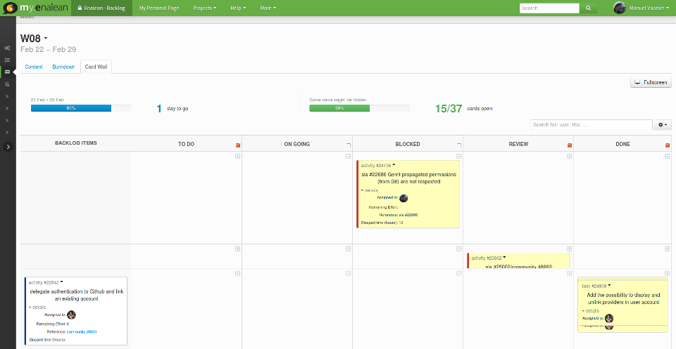

Your Agile project at Eclipse with Tuleap
Pascal Rapicault @prapicault & Manuel Vacelet @vaceletm

Disclaimer
No commercial relationship between Rapicorp and Enalean!
Pascal used Tuleap in 2013 while at Ericsson, he wanted to use it at Eclipse.
Why another tool at the foundation?
Support of Agile methodologies at Eclipse
- Agile is recognized as a good practice;
- Most of us are accostomed to Agile methodologies in our corporate setup;
- Because not every nail is suitable for the bugzilla hammer we currently have.
Expected Benefits
- Improve open-ness by adding transparency and visibility;
- Communicate status and future work efficiently.
Enters Tuleap


Agile: Scrum...
Agile: Scrum...
Agile: ...Kanban
Agile: and more...
- General tracking system
- Evolve really fast (1 release per month since 5 years!)
Eclipse ecosystem
Eclipse ecosystem: Bugzilla
Current Status
Tuleap deployed as a pilot
- Hardware provided by the Eclipse Foundation
- Management of the instance done by Enalean
Early adopters
- Tracecompass
- Polarsys
- EGerrit
- Apogy
What's next?
- Build momentum by signing up more projects
- Work the integration issues (e.g. SSL, LDAP, etc)
- Define a bugzilla / Tuleap strategy